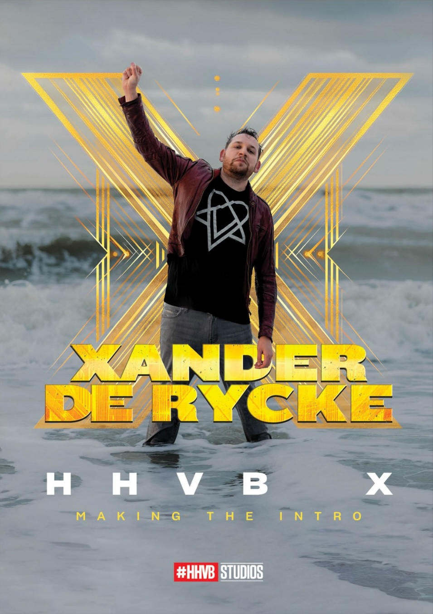
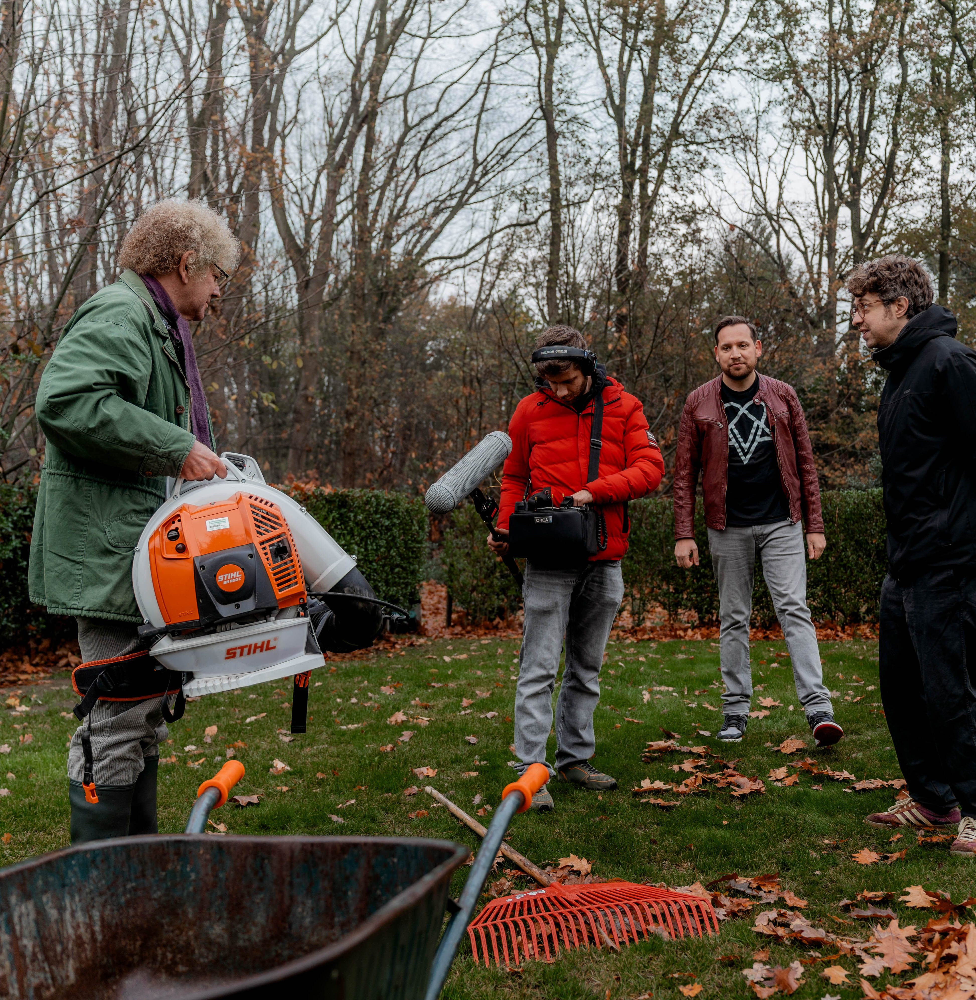
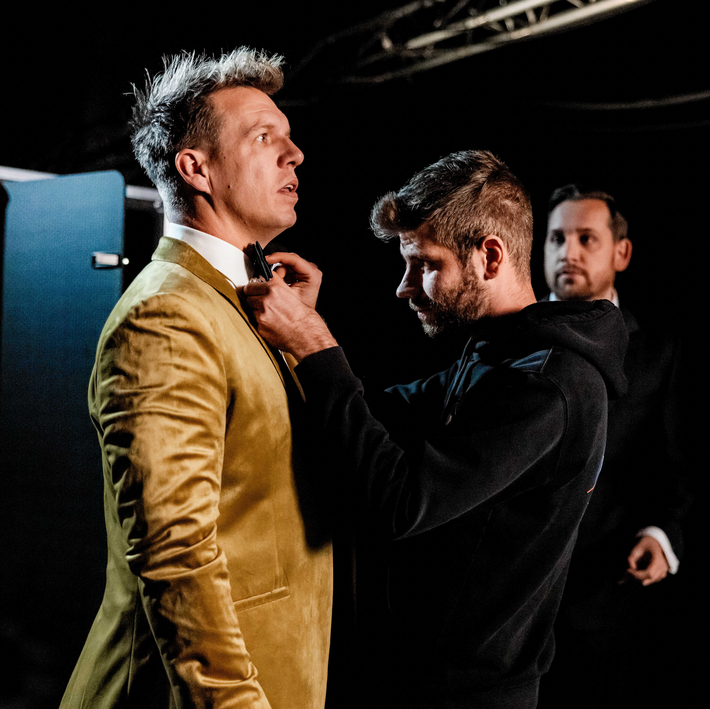
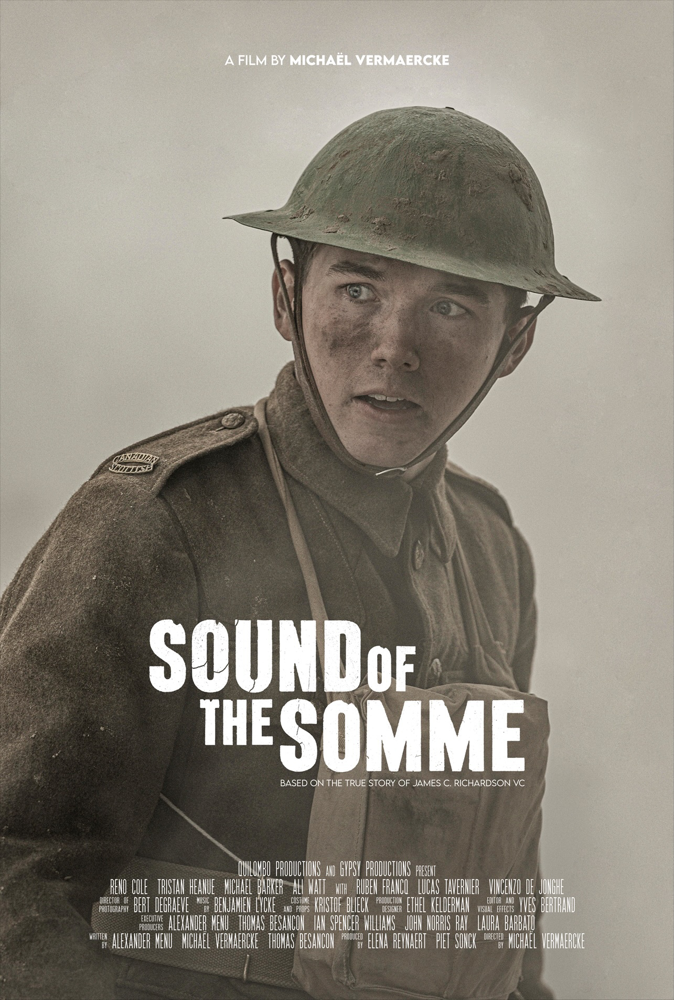
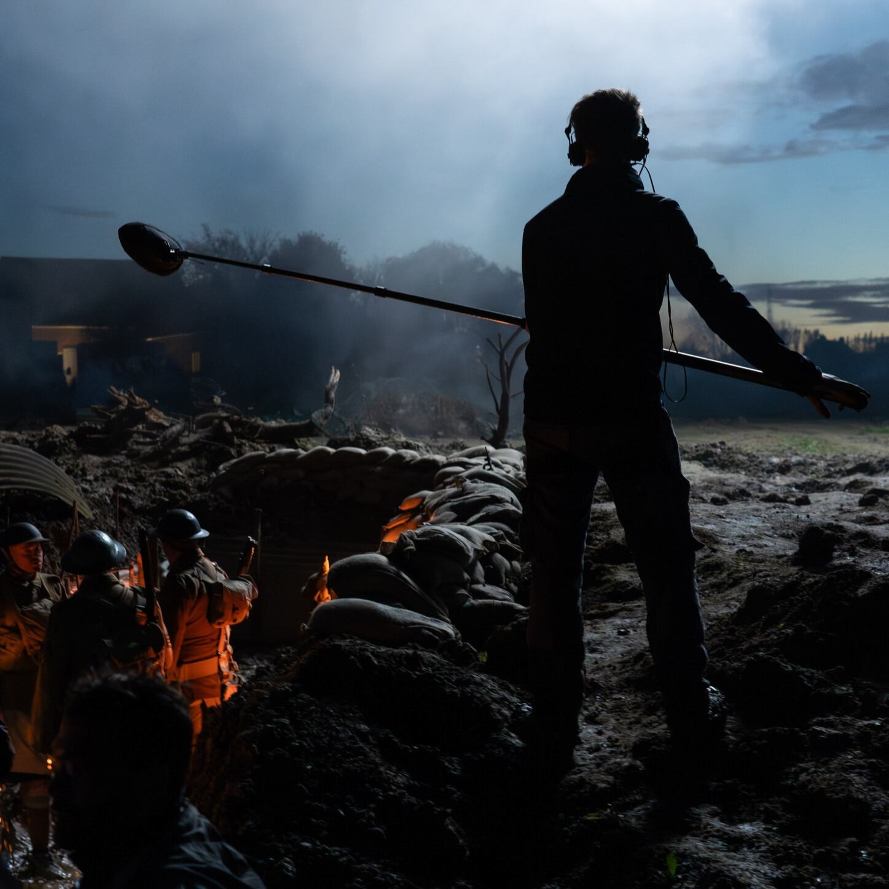
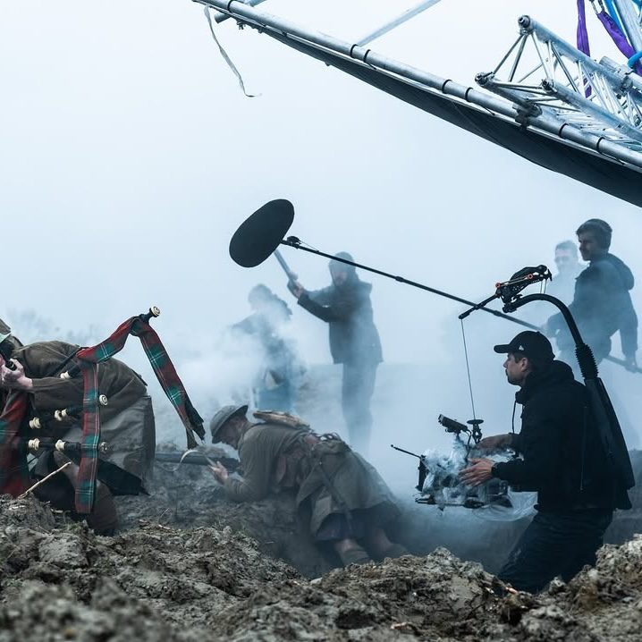
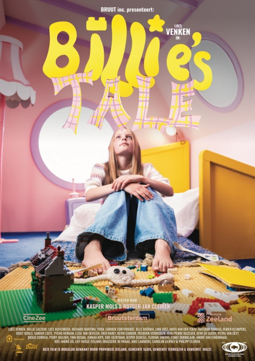
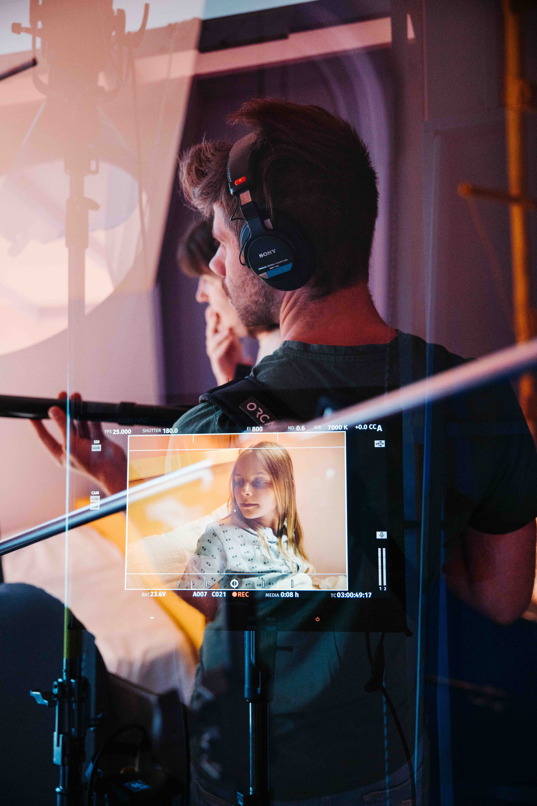

Geluid
Klank is een nieuw gebied waar ik me recentelijk in heb verdiept. Met mijn achtergrond in beeld en techniek, heb ik de stap gezet om geluid een grotere rol te geven in mijn werk. Ik werk eraan om mijn vaardigheden als klankman te ontwikkelen en zorg ervoor dat het geluid net zo krachtig is als het beeld.
Projecten
Xander De Rycke: Houdt het voor bekeken X
Voor de intro-film van Xander De Rycke’s jubileumshow in het Sportpaleis verzorgde ik de geluidsopnames. Een project met 40 cameo's, later uitgezonden op VRT Canvas.
Samenwerking met: Krew Collective, Visuals Internationals en Working Class Heroes.



Sound of the Somme
Als boom operator heb ik vier dagen in de modder gestaan voor de opnames van deze kortfilm over de loopgraven. De film ging in première op het Filmfestival van Oostende.
Samenwerking met: Quilombo



Billie’s Tale
Een coming-of-age film in het Zeeuwse landschap waarvoor ik het geluid heb verzorgd. Een unieke film met een Schotse voice-over die Billie uiteindelijk verlaat.
Samenwerking met: Bruut Collective

